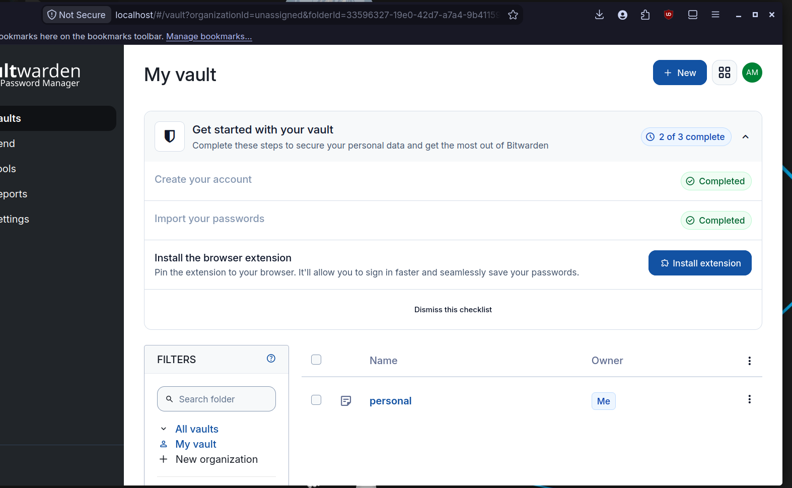
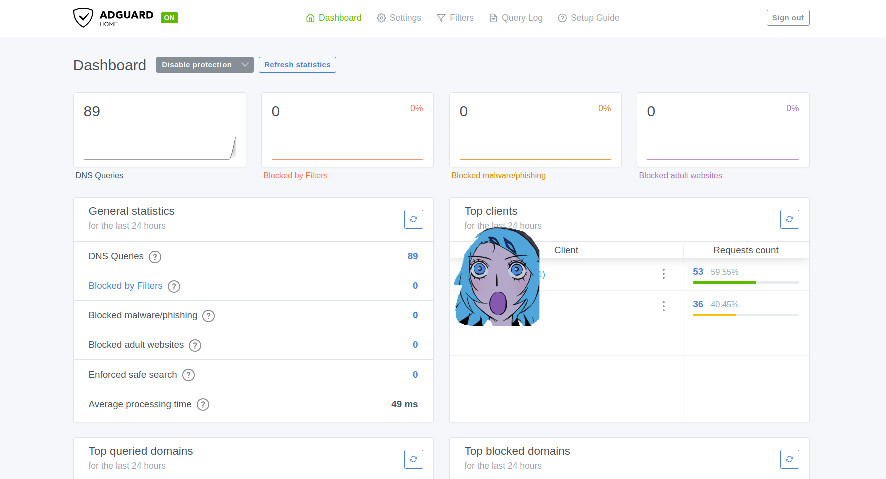
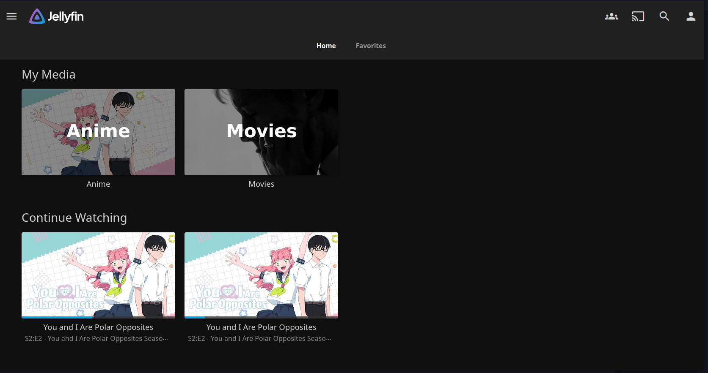

Vaultwarden
+ Caddy
+ Caddy

Bitwarden / Vaultwarden
Self-hosted password manager behind a Caddy reverse proxy with automatic local HTTPS. State and database live on an external SSD.
View projectBS IT graduate and CCNA certified. I run Linux servers, troubleshoot networks and hardware, and self-host my own services in Docker.
learning: Python, cloud fundamentals
⠀⠀⠀⢀⡴⠲⣄⠀⠀⢀⡶⠲⡄⠀⣀⣀⣀⣀⠀⠀⠀⠀⠀⠀⠀⠀⠀⠀ ⣀⣀⣀⣾⠁⠀⠹⠿⠟⠟⠀⠀⠙⣛⣉⡻⠿⠋⣿⣷⢦⣄⠀⠀⠀⠀⠀⠀ ⠭⠭⣽⠇⠀⠶⠀⢴⣦⠀⠶⠆⠸⠯⠭⠄⠀⠀⠀⠀⠀⠙⢧⡀⠀⢀⣤⣤ ⠀⠀⡟⠀⠀⠀⠀⠀⠀⠀⠀⠀⠀⠀⠀⠀⠀⠀⠀⠀⠀⠀⠈⢷⣤⣾⣻⡟ ⠀⠀⡇⠀⠀⠀⠀⠀⠀⠀⠀⠀⠀⠀⠀⠀⠀⠀⠀⠀⠀⠀⠀⢸⣧⠽⠋⠀ ⠀⠀⢷⡀⠀⠀⠀⠀⠀⠀⠀⠀⠀⠀⠀⠀⠀⠀⠀⠀⠀⠀⢠⡟⠀⠀⠀⠀ ⠀⠀⠈⠳⣄⡀⠀⠀⠀⠀⠀⠀⠀⠀⠀⠀⠀⠀⠀⠀⢀⣠⠟⠀⠀⠀⠀⠀ ⠀⠀⠀⠀⠉⠿⠟⠛⠛⠻⠾⠛⠛⠛⠛⠻⠟⠛⠛⠻⠾⠃⠀⠀⠀⠀⠀⠀

Self-hosted password manager behind a Caddy reverse proxy with automatic local HTTPS. State and database live on an external SSD.
View project
DNS filtering stack with AdGuard Home as a recursive resolver, so the local network no longer depends on third-party DNS providers.
View project
Containerized media server with persistent volume mapping and multi-user playback across the local network.
View projectOctober 2025 - December 2025
Completed Introduction to Networks and Introduction to Cybersecurity
ICCT Colleges (graduated December 2025)